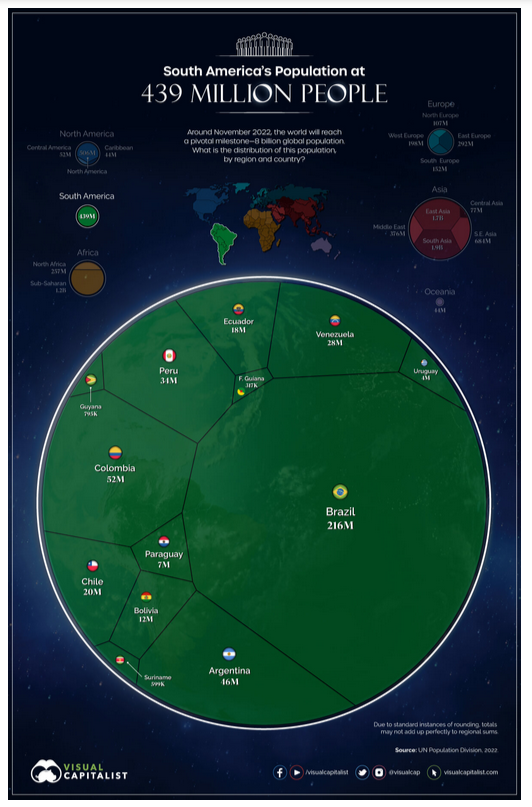
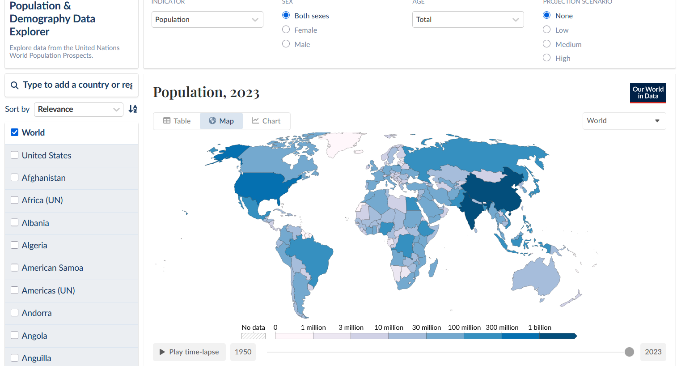
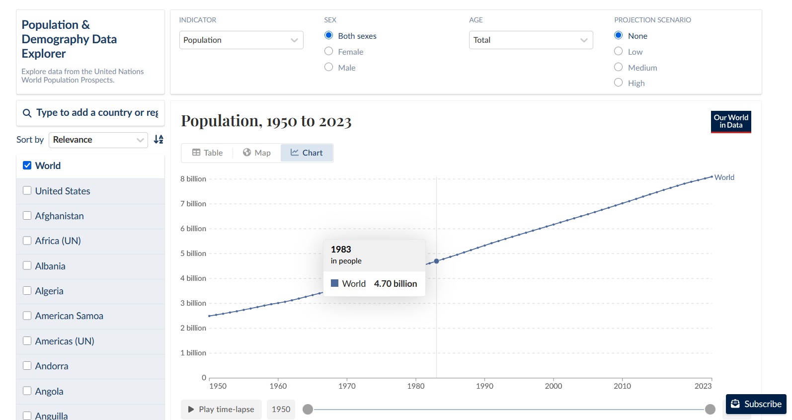
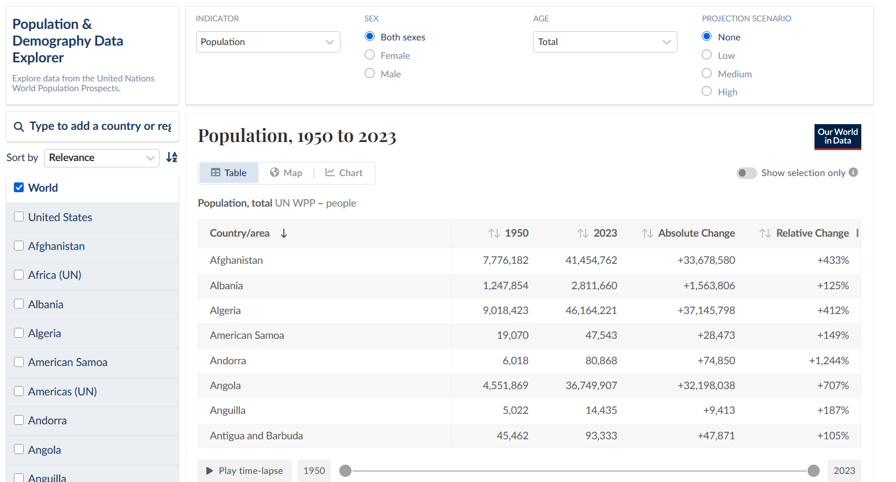

Vis in the Wild Assignment
Critical Discussion of the Visualization
Owen Edwards & Andrew Pipo
Purpose of the Visualization
The purpose of this visualization is to provide a clear and engaging representation of the world's population distribution. It highlights the concentration of people in different countries and regions, emphasizing global demographics. The goal is to help viewers grasp the scale of population differences at a glance, making large-scale population data more comprehensible.
Description of Data
The visualization presents the global population breakdown by country and continent as of 2022. It highlights population sizes, growth trends, and regional distributions. Data comes from demographic reports and census sources to reflect accurate estimates.
Data Source and Collection
The data used in this visualization comes from the United Nations (UN), specifically World Population Prospects 2022. The UN gathers this data through national census records, surveys, and statistical modeling, ensuring a comprehensive and reliable dataset.
Intended Users
This visualization is designed for general audiences, policymakers, demographers, educators, and students. It provides accessible insights without requiring technical knowledge, making it useful for both experts and the public. Researchers and journalists can also use it to identify key demographic trends.
Questions and Insights
This visualization allows users to ask and answer important questions about global population distribution, including:
- Which countries have the highest population?
- How does population distribution compare across continents?
- What percentage of the world’s population lives in different regions?
- Are there significant disparities in population sizes between countries?
Users can find answers by analyzing relative bubble sizes, color-coded regions, and proportional comparisons in the visualization.
Example Insights
- Asia dominates global population figures, with over half of the world’s people living in just a few countries.
- Africa’s population is rapidly growing, hinting at future demographic shifts.
- Some countries like Japan are shrinking due to declining birth rates.
Visual and Interaction Design
The visualization employs a well-structured design with effective color coding and proportional bubble sizes.
Effective Design Choices:
- Bubble size is proportional to population, making comparisons intuitive.
- Color coding distinguishes continents, aiding visual separation.
- Minimalist approach avoids clutter, making the data easy to interpret.
Areas for Improvement:
- Limited interactivity – The visualization is static; adding hover effects or zoom functions could enhance engagement.
- Text-heavy areas – Some population labels overlap, reducing clarity.
Limitations
While the visualization is informative, it has some limitations:
- No time-based data – It only represents the present, lacking trends over time.
- Not interactive – Users cannot click or hover for additional details.
- No breakdown by age/gender – While useful, it doesn’t show population structure beyond total numbers.
Gallery

Static Bubble Chart Visualization for Population (South America)

Heat Map Visualization

Chart Visualization

Table Visualization